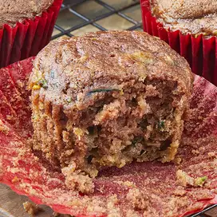

Apple Cinnamon Zucchini Muffins

Description
Prep: 15 mins
Cook: 25 mins
Total: 40 mins
Servings: 24
Yield: 24 muffins
Ingredients
- cooking spray
- 1¼ cups white sugar
- ⅔ cup oil
- 3 eggs
- 1 tablespoon vanilla extract
- 2¼ cups all-purpose flour
- 1½ tablespoons ground cinnamon, or more to taste
- ¾ teaspoon baking soda
- ¾ teaspoon baking powder
- 2 cups shredded zucchini
- 1 cup shredded apple
Steps
- Preheat oven to 350 degrees F (175 degrees C). Spray 24 muffin cups with cooking spray or line with paper liners.
- Whisk sugar, oil, eggs, and vanilla extract together in a bowl until smooth. Stir flour, cinnamon, baking soda, and baking powder into sugar mixture just until batter is combined. Fold zucchini and apple into batter and spoon into the prepared muffin cups.
- Bake in the preheated oven until until muffins spring back after pressing the top, about 25 minutes.